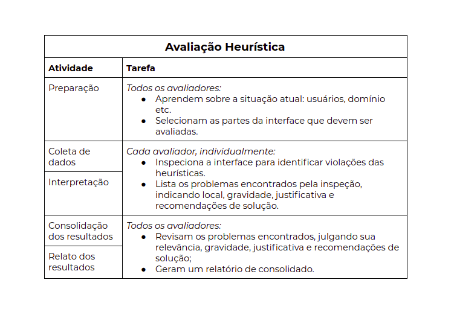
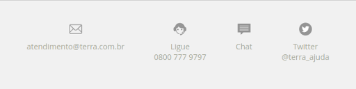
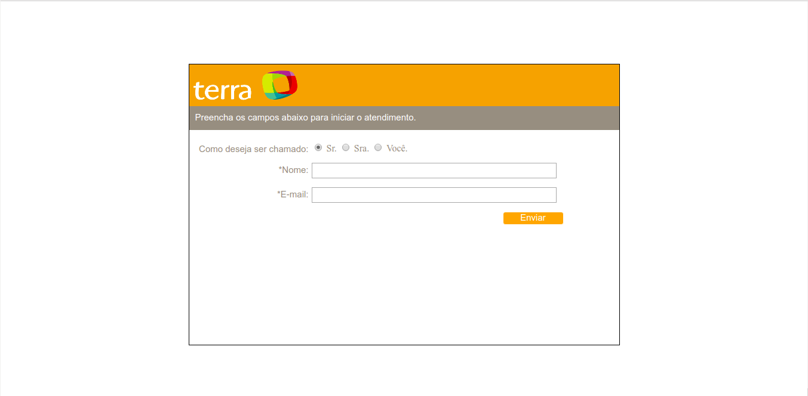

Avaliacao heuristica2.0
Avaliação Heurística 2.0
A avaliação heurística é um método de avaliação de IHC criado para encontrar problemas de usabilidade durante um processo de design interativo (Nielsen e Molich, 1990; Nielsen, 1993; Nielsen, 1994a).
Esse método de avaliação orienta os avaliadores a inspecionar sistematicamente a interface em busca de problemas que prejudiquem a usabilidade. Por ser um método de inspeção, a avaliação heurística foi proposta como uma alternativa de avaliação rápida e de baixo custo, quando comparada a métodos empíricos.
Objetivo
Tal avaliação, tem como objetivo inspecionar sistematicamente a interface, entre as páginas do site www.terra.com.br, em busca de problemas, que prejudiquem a usabilidade, voltados para usuários com um perfil de pessoa adulta que possui pretensões de se atualizarem quanto ao mundo das notícias e esportes, por exemplo.
Escopo
Como estruturação de atividades a serem seguidas, adotamos o seguinte modelo de avaliação heurística, que é proposta por Nielsen:

Diretrizes utilizadas
- Inspecionamos apenas conteúdos que estavam inseridos, especificamente, no site www.terra.com e nenhum portal relacionado à ele.
- Utilizamos como tópicos de avaliação os métodos empíricos propostos por Nielsen, que são eles:
- visibilidade do estado do sistema;
- correspondência entre o sistema e o mundo real;
- controle e liberdade do usuário;
- consistência e padronização;
- reconhecimento em vez de memorização;
- flexibilidade e eficiência de uso;
- projeto estético e minimalista;
- prevenção de erros;
- ajude os usuários a reconhecerem, diagnosticarem e se recuperarem de erros;
- ajuda e documentação;
Avaliadores
- Pedro Henrique Queiroz Miranda
- Daniel Souza de Melo
Problemas encontrados
- local onde ocorre:
Dentro da aba Painel do usuário/configurações, existe uma checkbox para ligar e desligar o modo noturno para o usuário.
-
descrição do problema:
Ao ligar a opção de modo noturno, o conteúdo das páginas passam de branco para preto, porém a barra de navegação, a aba de menu e até mesmo o próprio painel do usuário se mantém no branco, deixando de seguir o padrão da funcionalidade.
-
diretriz(es) violada(s):
- consistência e padronização;
- severidade do problema: Baixo
- sugestões de solução:
- Realizar a manutenção de todas as partes que não se adequam ao modo noturno;
- Retirar o modo noturno;
- local onde ocorre:
Ao clicar no link “atendimento”, localizado na barra de navegação do topo, você é redirecionado para a página de atendimento, então logo abaixo do conteúdo inicial ele te disponibiliza 4 opções de atendimentos e uma delas é o chat.

- descrição do problema:
Ao clicar na opção chat, você é redirecionado para uma página totalmente despadronizada sem nenhum botão para voltar ou ir para outro link:

- diretriz(es) violada(s):
- controle e liberdade do usuário;
- consistência e padronização;
- prevenção de erros;
- severidade do problema: Baixo
- sugestões de solução:
- Manter o padrão seguido pelas demais páginas do site;
- local onde ocorre:
Página inicial ou demais páginas que envolvam dispor notícias de categorias específicas.
- descrição do problema:
As notícias são jogadas dentro das páginas de forma aleatória e por conter muitos anúncios, dentro do site, traz muita confusão em tentar identificar o que é anúncio de publicidade e notícia.
- diretriz(es) violada(s):
- consistência e padronização;
- projeto estético e minimalista;
- severidade do problema: Média
- sugestões de solução:
- Diminuir ou retirar os anúncios que são, praticamente, despejados de forma incoerente e inesperado;
- Organizar a disposição de notícias;
- local onde ocorre: (https://www.terra.com.br/noticias/brasil/catve/videos)
- descrição do problema:
A página não segue o padrão de disposição de conteúdo:
- Não contendo título informando do que se trata a página;
- Não mostra em que página você está situado;
- Não dispõe o tipo do conteúdo que está sendo mostrado.
- diretriz(es) violada(s):
- prevenção de erros;
- reconhecimento em vez de memorização;
- consistência e padronização;
- severidade do problema: Média
- sugestões de solução:
- Trazer a padronização para esta página.
Histórico de Revisões
| Data | Responsável | Versão | Alteração |
|---|---|---|---|
| 14/10/2019 | @pedroMiranda7410 | 1.0 | Adicionando Versão 2.0 de Avaliação Heurística |